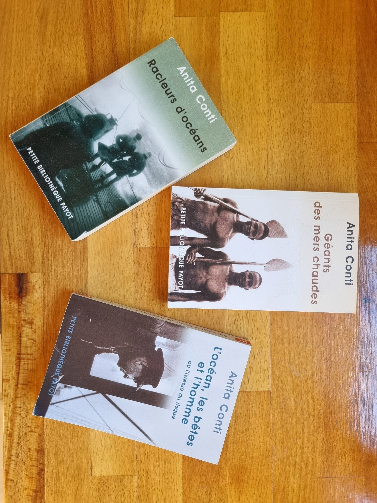

Dans le sillage d'Anita Conti

Un équipage prend la mer, sur les traces d'Anita Conti...
Pouvons-nous disposer des mers du globe ? … comme source d'alimentation, d'énergie, de minerais ? Des espaces maritimes … comme d'un terrain d'activité sportive, récréative ou de plaisance sans ouvrir les yeux sur leur impact à court ou moyen terme ?
* Anita CONTI, pionnière de l'océanographie, il y a plus de 50 ans déjà, lançait l'alerte et dénonçait les impacts négatifs de la surexploitation de la mer et de la surpêche sur l'écosystème marin. Elle annonçait des risques de déstabilisation des écosystèmes et de fortes pertes de biodiversité marine.
" Il faut cesser de piller l'océan ", " Nous devons penser aux générations à venir "... Une femme exceptionnelle qui avait pressenti la nécessité du développement durable de la mer..
Pouvons-nous disposer des mers du globe ? … comme source d'alimentation, d'énergie, de minerais ? Des espaces maritimes … comme d'un terrain d'activité sportive, récréative ou de plaisance sans ouvrir les yeux sur leur impact à court ou moyen terme ?
* Anita CONTI, pionnière de l'océanographie, il y a plus de 50 ans déjà, lançait l'alerte et dénonçait les impacts négatifs de la surexploitation de la mer et de la surpêche sur l'écosystème marin. Elle annonçait des risques de déstabilisation des écosystèmes et de fortes pertes de biodiversité marine.
" Il faut cesser de piller l'océan ", " Nous devons penser aux générations à venir "... Une femme exceptionnelle qui avait pressenti la nécessité du développement durable de la mer..